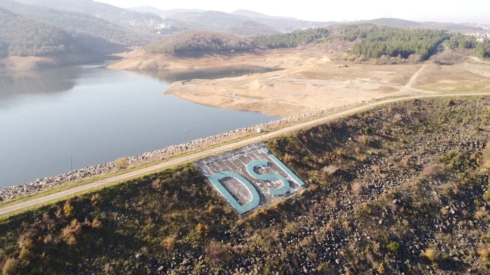

Büyük Su Sorunu
Gökçe Barajı'nın yüzde 82'si kurudu: 'Yalova'nın 30 günlük suyu kaldı
Termal ilçesinde 1980-1989 yıllarında inşa edilen Gökçe Barajı, 36 milyon metreküp kapasitesiyle Yalovalıların içme suyu ihtiyacını karşılıyor. Baraj, günde ortalama 100 bin metreküp su tüketen kenti besliyor. Yağış yetersizliğiyle barajın yüzde 82'si kururken, 3 milyon metreküp su kaldı.
Su Tasarrufu Nasıl Yapılır?
1 ) Musluğu açık bırakmayı
Annelerimiz bize o lezziz sebze yemeklerinden yapmadan önce onları güzel güzel yıkıyorlar. Sebzeler elde yıkanmak yerine, su dolu bir kapta yıkanırsa, çok daha az su tüketilir. 4 kişilik bir aile bu yöntemle yılda 18 ton su kurtarabilir
2 )Bulaşıkları makinede yıkayın
Bulaşıkları elde değil makinede yıkamak hem temizlik açısından hemde su tasarrufu açısından önemlidir. 4 kişilik bir ailenin bulaşığı elde yıkandığı zaman 80 ile 120 litre su kullanılır. Oysa bulaşık makinası aynı bulaşığı sadece 12 litre su ile yıkar. Buda yılda 26 ile 40 ton suyun kurtarılması demektir.
3 ) Dişerinizi fırçalarken, suyu kapatın
Diş ve ağız sağlığımıza dikkat etmeliyiz. Diş fırçalarken musluğu kapatara kullanmadığımız su gideri, yılda kişi başına ortalama 12 tondur. 4 kişilik bir aile için bu rakkam, 48 tondur.
4 ) Duş başlığınızı değiştirin
Yeni model, gayet ekonomik, suyu daha iyi püskürten su başlıklarından alın. Böylece daha az suyla daha tazikli duş alabilirsiniz.
5 ) Muslukları tamir ettirin
Evdeki tüm muslukların su kaçırmadığından emin olmalıyız. Bozuk musluk gördüğümüzde annebabamızı onları tamir ettirmek konusunda yönlendirmeliyiz... Her saniye bir damla su akıtan musluk yılda bir ton su harcar.
6 ) Çamaşır makinasını ekonomik kullanın
Evde, çamaşır makinası konusunda yapacağınız aile fertleri arasındaki iş birliği ailenizin büyük miktarda su tasarrufu yapmasını sağlayacaktır. Bir çamaşır makinası tek çalıştırmada 176 litre su harcar. Makinayı tam doldurmadan çalıştırmazsanız su tasrrufu için büyük bir katkıda bulunmuş olursunuz. Makinanızı yılda bir kez daha az çalıştırırsanız, yılda 9 ton suyu kurtarırsınız.